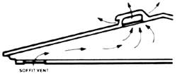

Well-water cooling is possible with a setup like this. A 500- gallon-per-hour pump circulates well water through three junked car radiators housed in a plywood box. A fan blows air through the radiators and into the house through a duct leading to a window. Used water can go to lawn and garden, or can return to the earth via a second well.